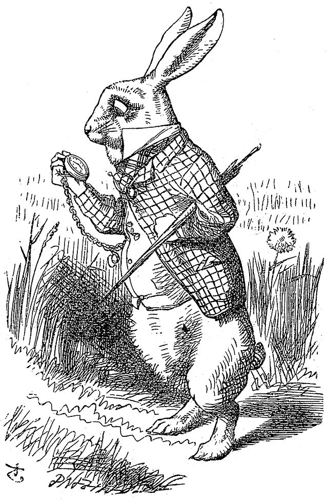

Welcome to Wonderland
Follow Alice as she chases the mysterious White Rabbit and begins her strange journey through Wonderland. This site presents the first three chapters of Lewis Carroll's classic story.
Begin Chapter 1 →
Follow Alice as she chases the mysterious White Rabbit and begins her strange journey through Wonderland. This site presents the first three chapters of Lewis Carroll's classic story.
Begin Chapter 1 →